Chapter 9
Strong and weak squares
9.1 Introduction
When we talk about strong or weak squares, the reader will doubtlessly have some kind of impression of what this notion implies. Nevertheless, I think it is advisable to confirm a few things and formulate a few definitions, in order to avoid confusion when we study certain positions. Before doing this, we will have a look at several positions that illustrate a number of important aspects.
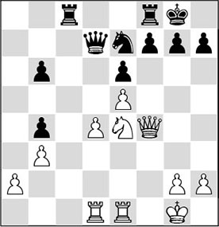
With the help of this example we can formulate some definitions:
- We call d6 a weak square for Black because this square is not covered by his own pawns; moreover, the square is within his own ranks, and it is controlled by a white pawn. Also, White has a realistic possibility to move one of his pieces to this square – in this case his knight.
- We call d5 a strong square for Black, since it cannot be controlled by white pawns; it is within his own ranks and it can be occupied by one of his own pieces.
Of course, the terms ‘strong square’ and ‘weak square’ are relative and depend on your point of view. Thus, a weak square for Black (in this case, d6) can be labelled a strong square from White’s point of view. On the other hand, the weak square c3 is strong for his opponent.
Very important is the term ‘within one’s own ranks’. Thus, the c3-square in the above diagram should be labelled weak for White, since this square is within his own ranks and cannot be controlled by his own pawns. Black has the possibility of focusing on the weakness of this square with 1…♘d5, followed by 2…♘c3.
If we examine the above once more, it may sound strange that the possession of a strong square, or the presence of a weak square in the opponent’s position, can carry the seeds of victory, or, vice-versa, defeat. Still, there are plenty of positions where this factor is decisive, which is why we will discuss it at length here. After all, a pawn cannot move backwards, and giving up a certain square can have serious consequences for your position.
In this chapter we will distinguish between positions where a single strong (or weak) square decides the game, and positions with a greater number of weak squares, which is also called a ‘colour complex’.
Now that we have made these definitions, we know what we are talking about. Let’s take a closer look at a few examples.
9.2 One strong square
In the position below, we can see what effect one strong square can have.
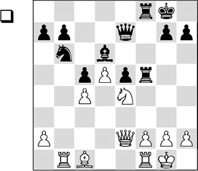
White has occupied the central square e4 with his knight. If we examine the position closer we notice the following things:
- White has a protected passed pawn on d5;
- White has more space;
- White has a half-open b-file;
- White has a good bishop and a strong knight;
- Black has a half-open f-file;
- Black has an isolated pawn on e5;
- Black has a bad bishop;
- The black queen is tied to the protection of the bishop;
- The black knight is out of play.
If we connect the above features with the strong square e4, we see that almost all of them are intertwined. Black’s bishop is bad because his pawns are on the same colour. Partly because the pawn on e5 is blocked, the bishop will have to remain passive. It does perform a defensive role, blockading the protected white pawn on d5.
Quite special is the white knight, which plays a dominant role on the strong e4-square. It is as though it is looking ‘beyond’ the black pieces, and it has an undermining effect. For instance, the black queen is tied to the protection of the bishop, which seriously limits its freedom of movement.
What else is the knight on e4 doing? Besides attacking the important c5- and d6-points, it also defends its own f2-point. This means that the black rooks on the f-file are actually looking foolish, since there is nothing to be gained there.
Another factor, more hidden beneath the surface, is that the c5-pawn misses its natural protection at the moment. The knight is a little clumsy on b6 and should ideally be played to the blockade square d6. From that square it could eliminate the strong white knight on e4. In practice, this is not so easy to achieve, since the pawn on c5 is a target on which White will focus as soon as possible.
There followed:
1.♗e3 h6
Since in these circumstances White threatens to jump inside Black’s position via the g5-square, Black permits himself this weakening of his king position, which he will sorely regret later on.
After the text, White focuses on the ailing pawn on c5. But it was hard to suggest a useful alternative for Black. Possible was 1…♘c8, in order to give the pawn on c5 its natural protection with 2…b6. But White continues powerfully with 2.♕g4 b6, and now with 3.♘g5 White reaches the e6-square with his knight.
Now, the problems are also mounting for Black, since, apart from the invasion by the white pieces, the pawn on b6 constitutes a new point of attack that White can get at with a2-a4-a5.
2.♖b5 ♖c8 3.♕g4 ♖ff8
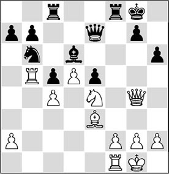
4.♗xh6
Suddenly White strikes on the kingside, forcing a quick decision. Also not bad was 4.♖c1, to maintain his beautiful structure and keep his opponent tied up.
4…♘xc4 5.♖c1 a6
Forced, since after 5…♘b6 6.♘xd6, Black cannot take back.
6.♖b3 b5
Positionally speaking, Black has done a good job on the queenside, but on the other side of the board he now meets an inglorious end.
7.♖g3
7.♗xg7 was not bad either.
7…♖c7 8.♗xg7
1-0
Playing through this fragment we are struck by the lingering power of the motionless knight on e4. It assists White in tying down the opponent on the entire board, and the attack on the king is a logical consequence.
In the previous example, we have seen how the possession of a strong square led to victory. Clearly, our pieces need good squares to come alive.
In the next diagram, White creates a strong square, plants a knight there, and thus ties up his opponent.
Leningrad/Moscow ch-URS 1941 (4)
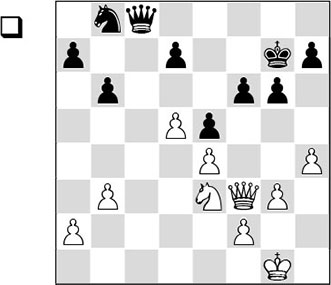
In this simplified position, Black is in big trouble. Despite the reduced material, he has little space, and especially his knight on b8 cannot become active for the time being. Moreover, his kingside is decaying. His possession of the only open file (the c-file) does not offset the drawbacks of his position, and with his next move White hits Black where it hurts: on f6.
1.♘g4 ♕f8 2.h5
A strong move, threatening to win a pawn right away with 3.h6+, after which Black can no longer defend f6. Therefore, Black is compelled to play the following, horrible reply.
2…gxh5
Now an irreparable hole on f5 has been created, and Black will be made to feel this.
3.♘e3

3…d6?!
In an attempt to give his knight a somewhat brighter future, Keres weakens his position still further. Things will not get any better for him, as after some time the beautiful c6-square will fall into White’s hands. What’s more, the pawn on d6 will become a target.
Relatively best was the ugly-looking 3…♔h6, even though White obtains a huge advantage here as well after 4.♘f5+ ♔g6 5.♘h4+.
4.♘f5+ ♔g6 5.♕c3!
Now the queen switches to the only open file, while the knight on f5 keeps the entire position within its grasp.
5…♘a6
Since he realizes that the planned 5…♘d7 fails to 6.♕c7 ♘c5 7.♘h4+ ♔h6 8.f3, winning at least a pawn, Black decides to ‘develop’ his knight to the pathetic square a6.
6.♕c6
White opts for the gain of a pawn, but possibly 6.b4!, followed by 7.a3, was even stronger. The black knight would then have had to stay on the rim forever.
6…♘c5
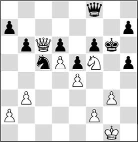
7.f3!
White prefers to keep the opponent in his grip, rather than give him unclear counterchances with 7.♘xd6 h4 8.gxh4, followed by 8…♔h5 and, possibly, …♕g7 or …♕h6.
It is instructive to see how the knight on f5 reigns supreme.
7…♘d3
On its own this knight can accomplish nothing.
8.♕c7
White spurns the pawn on d6, since after 8.♕xd6? ♕xd6 9.♘xd6 ♘c1, Black would have good chances of a draw.
8…b5 9.♕xa7
1-0
The helplessness of the defender that we saw in the previous fragment is even better demonstrated in the following game:
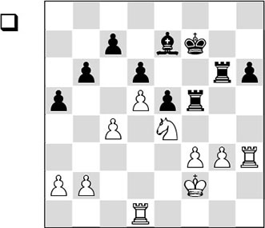
In the diagram position, the strong knight on the e4-square immediately catches the eye. We call the bishop on e7 bad, because the most important pawns in the centre have been fixed on squares of the same colour as this bishop. The main consequence of this is that Black has become very vulnerable on the light squares.
To win from this position, White will, in the long run, have to penetrate via the light squares. This can only be achieved if he manages to exchange all the rooks. First he needs to open a second front.
1.a3 ♔e8 2.b4 axb4 3.axb4 ♔d7 4.♖a1 ♗f8 5.♖ah1
The white rooks can operate on two files. Via the h-file White conquers the h5-square, which later enables him to play g3-g4 undisturbed, and then move his knight to the newly-created strong square f5.
5…♗g7 6.♖h5 ♖xh5
Perhaps Black should not have exchanged any rooks, as long as it was not strictly necessary. Still, after 6…♖f8 7.♖a1, White would keep the position under control.
7.♖xh5 ♗f8
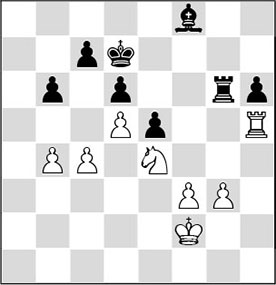
8.♖f5
White finds an interesting method to wrong-foot his opponent. Black was ready for …♔e7, …♖g8, …♗g7 and …♖a8, which would greatly endanger White’s winning attempts.
8…♔e7
A ‘clumsy’, but more or less forced move. 8…♖g8?? would fail to 9.♘f6+, and 8…♗g7 9.♖f7+ ♔c8 is met by 10.g4!, after which Black cannot stir a finger.
9.g4 ♗g7 10.♔e3
White is planning to play his knight round to f5, but he does not allow any counterchances. That is why the king has to guard the strong square e4, so Black will not be able to break loose with …e5-e4.
10…♗f6
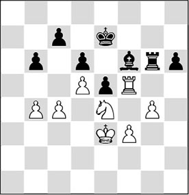
11.♖h5
Having done its job, the rook hurries back. As White is attacking h6, he doesn’t have to be afraid that the a-file falls into Black’s hands yet.
11…♔f7 12.♖h1 ♔e7 13.♔d3
Ehlvest has all the time in the world. The king moves to a light square, so as not to allow any ‘accidents’.
13…♗g7 14.♘g3

Finally the knight leaves its niche, but from the f5-square it will radiate even more strength. The white king can take over its role on e4.
14…♗f8?!
A better attempt to stay afloat consisted of 14…♖f6. After 15.♘f5+ ♔f7 16.♔e4, the black king proceeds to g6, so as to enable the freeing push …h6-h5. It is not yet clear how White could have made progress in that case.
15.♔e4 ♖f6 16.♘f5+ ♔e8
Here also, 16…♔f7 was preferable.
17.♖a1!
It is instructive to see how White manages to make use of both of the files that he controls. Now he invades via the a-file.
17…♔d7 18.♖a8 ♖f7
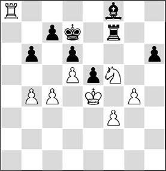
19.b5
According to the motto: ‘fix all the black pawns on the colour of the bishop’, White rules out …b6-b5 and …c7-c6.
19…♖f6
Black is doomed to complete passivity.
20.♔e3
The penultimate stage of the winning plan. The king is on its way to the h5-square, where it threatens to enter the black position via g6. Since in principle, Black only has the moves …♖f6-f7-f6, this plan will decide the issue.
20…♖f7 21.♔f2 h5
In desperation, Black tries to undertake something. Although this move rids him of a weakness, the remedy is worse than the disease. The passed pawn that White gets in return is a giant.
22.♔e3!
Now that the situation has changed, the king returns to the familiar square e4. There, it protects the knight, which allows him to set his g-pawn in motion.
22…hxg4 23.fxg4 ♗e7
Black can no longer sit and watch. After 23…♖f6 24.♔e4 ♖f7 25.g5, he would also be done for.
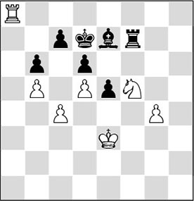
24.♖g8!
The final stage of White’s winning plan commences. The rook invades via the back rank on the kingside – yet again! – with the intention to swap rooks.
24…♗d8 25.♔e4
More precise than the immediate 25.♖g7.
25…♖h7 26.♖g7+ ♖xg7 27.♘xg7
Black resigned, since the white king will penetrate via f5 and support its passed pawn. From e6, the white knight will be able to support the entire procedure.
In the previous game we have seen that the white player could comfortably increase his advantages. This was mainly thanks to the fact that he possessed the advantage of good knight versus bad bishop. The white knight was clearly superior to its black ‘counterpart’, and that was one of the reasons why the black player ended up in a passive position. In the following game we see how the white player also manages to create a strong square, after which – analogously to our previous example – he aims for an endgame with good knight versus bad bishop.
We have seen that the possession of a strong square is an important basis to support our own operations. Not only is the opponent ‘banging his head against that square’, but it determines, as it were, the future of most of the pieces. In the following game, in which a 17-year-old Kasparov takes on the ladies’ ex-World Champion, Chiburdanidze, we are treated to an amazing illustration of this theme.
KI 18.7 (E92)
1.d4 ♘f6 2.c4 g6 3.♘c3 ♗g7 4.e4 d6
This opening, the King’s Indian Defence, was later to become one of Kasparov’s own main defensive weapons.
5.♘f3 0-0 6.♗e2 e5 7.♗e3
This system carries the name of the Yugoslav grandmaster Svetozar Gligoric. The chief idea behind the text move is to postpone castling for a little longer.
7…♕e7
This was also how Bobby Fischer defended against White’s plan. Today, 7…♘g4 and 7…♘a6 are the fashionable variations.
8.d5
8.dxe5 dxe5 9.♘d5 is also known theory; White has slightly better play.
8…♘g4 9.♗g5 f6 10.♗h4 h5 11.h3 ♘h6 12.♘d2 c5
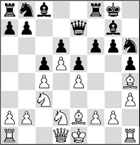
It is useful to examine this position a little more closely. The centre is closed, which means that we are dealing with a pawn chain here. White has more space thanks to his pawn on d5.
Nimzowitsch already held a strong view on the way positions with pawn chains were to be treated: ‘If you look at the pawns that have been joined together’, he said, ‘then the rearmost pawns form the base of the pawn chain.’ For White, these are the pawns on c4 and e4, and for Black it is the pawn on d6. These bases must be attacked by other pawns, and also with pieces. Concretely: Black must rely on the …f6-f5 push, whereas White must try to pry open the c-file with b2-b4, in order to approach the black base at a later stage.
The gist of what Nimzowitsch claims here is correct, but the position he is taking up is not very flexible. After all, he disapproved of opening the game on the flank where the opponent is operating, whereas this is exactly what Kasparov is planning to do here!
13.♘f1!?
This move might still have gained Nimzowitsch’s stamp of approval: the knight is on its way to e3, making it as difficult for Black as possible to carry out his thematic pawn push.
13…♘f7?!
An aimless move, which should have been replaced by 13…♘a6.
Incidentally, we might ask why Black did not start this action by playing 13…g5 here. After 14.♗g3 h4 (otherwise this pawn will be hanging) 15.♗h2 f5, Black has met the demands of the position, hasn’t she? But if you have studied the beginning of this chapter, you will now understand that Black is strategically in bad shape after 16.♘e3!, after which we can label Black’s action as a failure. After 16…fxe4 (in case of 16…f4 17.♘g4, Black’s pawn formation is restricted, and White has taken possession of the beautiful light squares) 17.♘xe4, White gains possession of the beautiful e4-square.
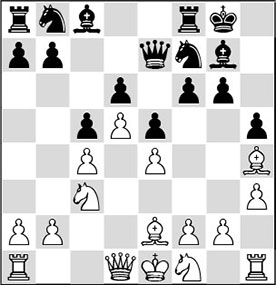
14.g4!
This would have made Nimzowitsch raise an eyebrow, but White’s action is positionally completely sound. Although he weakens the f4-square, he can boast several other successes, as we shall see soon.
14…hxg4?!
The ‘normal’ continuation here was 14…g5 15.♗g3 h4 16.♗h2 ♘h8, after which the black knight can settle on the strong square f4. Since the kingside is sealed up and Black is thus lacking the usual counterchances with …f6-f5, White is still clearly better.
Kasparov indicates the following plan for White to pursue: f2-f3, ♘e3, ♗f1, ♗g1, ♖h2, ♖b1, a2-a3, b2-b4, after which Black must pull out all the stops to avoid disaster on the queenside.
An almost identical position occurred in the following game from my own practice, where White carried out the above-mentioned plan:
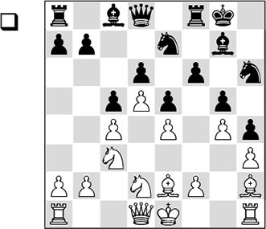
From several of Petrosian’s games we know that he used to take great care that the kingside was sealed, to prevent Black from starting actions with …f6-f5. The former World Champion was known for having the ‘patience of a saint’ when it came to creating an entrance on the other side of the board. This is also the main theme in this fragment. In the long run, White chooses a set-up with a2-a3 and b2-b4. In the meantime, he tries to transfer his pieces step by step to the queenside.
16.♗g1 ♘g6 17.f3 ♘f7 18.♖b1 a5 19.a3 ♘f4
The knight is strong here, but without assistance it cannot accomplish anything.
20.♗f1 ♖e8 21.♖h2 ♗f8 22.b3 b6 23.♖b2 ♗e7 24.♘db1 ♕d7 25.♘a4 ♗d8 26.♘bc3 ♗c7 27.♖a2 ♔g7 28.♖hb2 ♕d8

29.b4
Now the moment has come to carry out the carefully-directed action.
29…axb4 30.axb4 ♗d7 31.♘b5 ♖e7 32.♕b1 ♗xb5
A concession: the light-squared bishop will be sorely missed in the black camp.
33.cxb5 cxb4 34.♖c2!
Recapturing on b4 can wait.
34…♕b8 35.♕xb4 ♘d8 36.♖a3 ♖a5 37.♖ca2 ♖f7 38.♘b2 ♘b7
Black has achieved a decent set-up, but she still cannot prevent the coming difficulties.
39.♘c4 ♖xa3 40.♕xa3 ♘a5 41.♘xa5 bxa5

42.♕e3!
It is essential for White to carry through the push b5-b6.
42…♗d8 43.♖b2 a4
Black plays her only trump card.
44.b6 ♖b7 45.♔d1!
The correct approach, since the pawn on a4 is a nuisance. White also rules out any possible discovered checks.
45…♕a8 46.♕a3 ♗xb6
This amounts to capitulation, but there was nothing decent left for Black.
47.♖xb6 ♖xb6 48.♗xb6 ♕b8 49.♕b4 a3 50.♔c2
Please note how important it is that the white king is within the square of the black passed pawn.
50…♕c8+ 51.♕c4 ♕xc4+ 52.♗xc4 ♘xh3 53.♗e3 ♘f4 54.♗xf4 gxf4 55.♗f1
1-0
Now let us return to the main game.
15.♗xg4!
The most important thought behind the previous move. Kasparov exchanges his bad bishop for Black’s good one.
15…g5
The black player now realizes that after 15…♗xg4 16.hxg4, followed by 17.♘e3, she can forget about any action with …f6-f5, and so now she suddenly starts to make haste.
16.♗xc8 ♖xc8
The critical moment in the game. After 17.♗g3, Black would sacrifice a pawn with 17…f5!? 18.exf5 e4, when the diagonal of the bad bishop is opened and the black pieces come alive via the e5-square.
Also after 17.♕g4 ♘a6 18.♗g3 ♘h6 19.♕e2, Black would have been able to find counterplay with 19…f5!?. After 20.exf5, White is prevented from taking control of the position in the nick of time by 20…e4! (better than 20…♘xf5 21.♘e4, when the possession of the e4-square outweighs that of the d4-square) 21.♘xe4 ♗xb2, and now unclear complications have arisen, where Black’s chances are not worse. However, Kasparov has a fantastic surprise for his opponent.
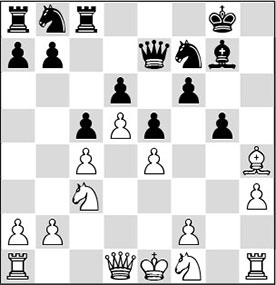
17.♘e3!!
A phenomenal piece sacrifice, which is based on the permanent conquest of the f5-square. White also gains control over the open g-file, but Chiburdanidze must at least have looked up in amazement when her opponent gave up an entire piece for these two positional factors.
Is the f5-square that important? In this case, a straightforward ‘yes’ is in order. As Black can forget about …f6-f5 now, her bishop on g7 is reduced to a ‘statue’. Furthermore, White has an edge in development, enabling him to activate his other pieces and restrict Black’s activity to a maximum.
17…gxh4 18.♘f5 ♕d8
Slightly better was 18…♕f8, since the queen has to go there anyway, but it does not make much difference.
19.♕g4 ♘g5 20.♘xh4
Kasparov has reduced his material disadvantage to a pawn for a knight, but that was not what it was about. It is much more important that White drives away the black knight with his h-pawn, and then makes the g-file his sphere of activity.
Incidentally, 20.♘xd6 also looks like a promising possibility. After 20…♖c7 21.♘f5, White will have to clear away the black h-pawn before he can start his actions along the g-file.
20…♖c7 21.♘f5 a6 22.h4 ♘h7 23.♖g1 ♕f8
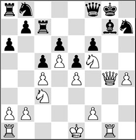
24.♔e2!
Here we see how useful it can sometimes be not to castle. At the moment, the white king is safest in the centre.
24…♖a7
If Chiburdanidze had given a pawn with 24…b5 in an ultimate attempt to achieve counterplay, she would also have come up short: 25.cxb5 axb5 26.♘xb5 ♖d7 (after 26…♖b7 it becomes clear how strong the knight is on f5, since now the pawn on d6 falls: 27.♘fxd6 is the adequate reply) 27.♖g3, and White is already almost winning here. Black’s counterplay will not get off the ground, and via the g-file White will quickly step up the pressure.
25.a4
White shows that he has all the time in the world, in spite of his (great) material deficit. The …b7-b5 push is not on the cards for the time being.
25…b6 26.♕h5
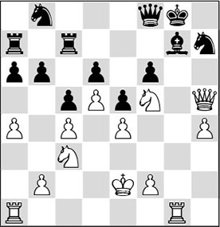
The diagram position gives a nice picture of the results that White has achieved after his stunning piece sacrifice on the 17th move. Black’s three pieces are not functioning at all (the knight on b8 cannot be brought into the game) and a dire lack of space makes all her pieces gasp for air.
26…♔h8
The king would prefer to move to the other side of the board, but it is impossible for it to escape from the danger zone.
27.♖g6 ♖d7 28.♖ag1 ♖ab7 29.♕g4 ♖bc7
Black already has no active plan, and she must sit and watch.
30.♖g2 ♖b7
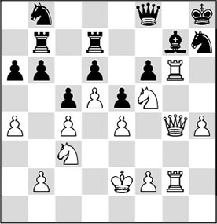
31.♔f1!
With this move Kasparov makes the opponent feel utterly helpless. He takes his time to bring his king to a safer place, and at the same time vacates the e2-square for the knight – thus planning f2-f4. This pawn cannot be captured, as then the second knight will be involved in the attack.
With hindsight, all these preparations weren’t necessary. White could have hauled in the loot straight away with 31.h5! ♘g5 32.h6. But then after 32…♗xh6 he would have had to find the strong reply 33.♖h2!. After, for example, 34…♘f7 35.♖g7 Black gets mated.
With his pawn on f4, White can push his h-pawn. With the text move Kasparov vacates the e2-square for the knight, and he first brings his king to the kingside, also because Black will immediately react with …b6-b5 as soon as the queen’s knight is removed from c3.
31…♖a7 32.♔g1 ♖f7 33.♘e2 ♕c8
In her desperation, Chiburdanidze tries to prepare a few ‘swindles’, but probably it would have been better to play …b6-b5 without hesitation. With the text move she intends to vacate the f8-square for the knight.
34.f4?!
Kasparov consistently continues on the chosen path. But in this position he had a simpler winning plan at his disposal. After 34.♘eg3!, the threat of ♘h5 could not have been averted, and the bishop on g7 would have been doomed.
34…b5 35.axb5 axb5 36.cxb5 ♖ab7 37.h5 ♘f8 38.♕h3!
An elegant move that brings the win within reach. Now the devastating threat is 39.h6 ♘xg6 40.hxg7+ ♔g8 41.♖xg6 ♖xg7 42.♘e7+, winning the queen.
38…♘xg6 39.hxg6+ ♔g8 40.gxf7+ ♔f8
And Black surrendered without waiting for White’s reply.
9.3 The weak colour complex
The following position is derived from Nimzowitsch’s book My System. He describes what a player can do who possesses more than one strong square.
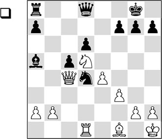
Our eye is immediately caught by White’s possession of the beautiful squares d5 and c4. He has various pieces which can use these squares: the queen, the bishop and the knight. White’s current set-up demands some adaptations from Black. In other words: Black has to reckon with the effects of the white knight on d5.
Nimzowitsch now recommends a so-called ‘changing of the guard’, meaning that White should occupy the c4- and d5-squares with several pieces in turn. For example, with 1.♘e3, followed by 2.♕d5, White can take up a different configuration, and Black has to anticipate this. In this way, White can use the c4-square for his bishop as well as his knight.
Nimzowitsch claims that, provided that White keeps manoeuvring long enough, taking up new configurations every time (and, of course, combining this with other actions), the opponent will sooner or later be wrong-footed. ‘You should, as it were, make him ‘feel’ those strong squares’, our venerable Teacher tells us.
In the following example, I was able to apply this ‘changing of the guard’ method myself.
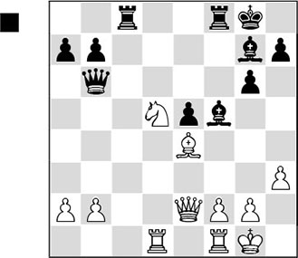
In this position, White controls the beautiful squares e4 and d5. The ultimate goal is to induce Black to exchange the light-squared bishop – of course, without losing control of the e4-square! Thanks to White’s strongly centralized position, Black must dance to White’s tune. In the meantime, the white knight is stirring up trouble.
1…♕c5 2.♘c3!
A strong move. The knight temporarily returns in order to allow the bishop to control b7, and at the same time to vacate the d5-square for another piece.
2…♖c7 3.♖d5 ♕c4 4.♖e1
White keeps his strong central position intact.
4…♔h8
Exchanging queens would have given Black more chances of survival.
5.♕d2
White now steers towards a middlegame where his pieces are more effectively placed than Black’s.
5…♗e6 6.♖d8 ♕c5 7.♖d1
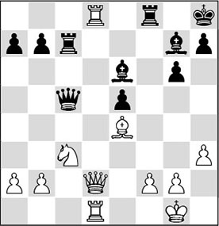
Now White has also taken firm possession of the d-file.
7…♖f7?!
Jumping from the frying pan into the fire. White is now allowed to carry through his favourite exchange. By the way, it wasn’t so easy to find an alternative for Black. Perhaps 6…b6 was better.
8.♖xf8+ ♕xf8
Here 8…♗xf8 was probably more tenacious.
9.♕e3!
A useful insertion, since after the immediate 9.♗d5 ♗xd5 10.♘xd5 e4, Black would have at least been able to bring his bishop into play.
9…b6 10.♗d5!
And here we have the third ‘changing of the guard’. The bishop has not been on this square yet, and it is not meant to stay here for long. The exchange of the light-squared bishop yields White permanent control of the strong square e4, as soon as he forces an ending of strong knight versus bad bishop.
10…♗xd5 11.♖xd5
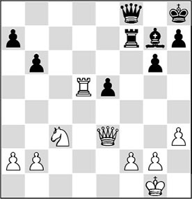
11…e4!?
Black understands perfectly well what fate is awaiting him. After an arbitrary move there would follow 12.♘e4, tying him up completely. But the pawn sacrifice will not help him either.
12.♘xe4 ♖e7
Not consistent. The intention of Black’s previous move was obviously 12…♗xb2, but on closer examination he must have concluded that in that case 13.♕d2! would have been quite unpleasant for him. After the forced 13…♕a3 (White threatened both 14.♖d8+ and 14.♕xb2+), 14.♘d6 (possibly preceded by 14.♖d8+ ♔g7) is lethal. After, for instance, 14…♖d7, 15.♕f4! wins.
Now White remains a healthy pawn up. The game continued:
13.b3 h6 14.♕d3
14.h4, followed by g2-g3 and ♔g2, was much more accurate here.
14…♕f4 15.♖d8+ ♔h7 16.♕d5
16.♕c4 h5.
16…h5 17.♘g5+ ♔h6 18.♘f3 ♖c7?
Now Black could have stirred up quite a lot of trouble with 18…♖e2. After the text move, things go downhill quickly.
19.g3 ♕c1+ 20.♔g2 ♖c5 21.♕e4
And Black had seen enough.
It is time we have a look at positions where a larger number of squares have been weakened. The following diagram provides a pretty example.
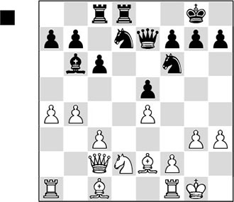
Black has exchanged his light-squared bishop for a knight, and although his pieces are reasonably well positioned, this defect in his position is already clearly perceptible.
The white bishop on e2 strives for the beautiful c4-square, in order to exert pressure on the a2-f7 diagonal. Black’s major problem is that he has no ‘opponent’ left to neutralize this pressure. His next move suggests that the black player does not recognize the weakness of his light squares.
1…c5?
Now the black position changes from bad to hopelessly lost. Not only does he give up the important central square d5, but he also voluntarily puts a pawn on the colour of his bishop – burying it alive, as it were.
2.b5!
In spite of the fact that in principle White, considering he has the bishop pair, should strive for an opening of the position, Botvinnik closes it up now. He contents himself with the light squares that have simply fallen into his lap.
We have to mention an amusing anecdote here. The story goes that Botvinnik’s arch-rival David Bronstein once thought 45 minutes after the opening moves 1.e4 e5 2.♘f3 ♘c6 3.♗b5 a6, before deciding on the exchange 4.♗xc6. Afterwards he was asked what made him think so long about this theoretically known continuation. Bronstein replied laconically that with the exchange of his bishop for the knight he had weakened 32 light squares, and that he had wanted to stop and think how he could deal with this weakening in the further course of the game!
2…♘e8?!
In modern chess we would not hesitate to make the active pawn sacrifice 2…c4!? here. The reasoning behind this move is simple: four pieces (♕e7, ♖c8, ♘d7, ♗b6) are looking at the pawn on c5, and so abandoning this gem would definitely offset the lack of activity Black will be suffering from in the game.
During the analysis of a game where a bishop was hemmed in by a pawn I once heard a Dutch master say: ‘Throw away that damned pawn, then at least we can have a piece rejoining the game!’
Probably White would do best to wait with the capture of this pawn. With 2…c4 3.a5 ♗c5 4.♔g2, he could keep Black in the dark as to how (and, more importantly, when!) he would take the pawn.
3.♘c4
White ‘clears’ the c4-square for his bishop, which now gains in strength.
3…♘d6
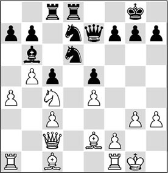
4.♗g5! f6
This results in a new weakening of several light squares. Or rather: the diagonal a2-g8 is now extended for the bishop, for since the pawn is no longer on f7, the squares e6, f7 and g8 are seriously weakened. The impact of this weakening will become clear later on.
So, 4.♗g5 is a devious little intermediate move! Black could not very well go for 4…♕xg5 on account of 5.♘xd6 ♖b8 (here too, Black’s only chance is 5…c4!? 6.♔g2 ♖c7, but after 7.♘xc4 ♘f8 8.a5 ♗c5 9.♖ad1, White also keeps an advantage) 6.♗c4 ♖f8 7.♗d5, and White wins the pawn on b7, after which he will be able to create a dangerous passed pawn.
4…♘f6 is not so attractive for Black in view of 5.♘e3, and now the d5-square is beckoning the knight.
5.♗e3 ♘xc4
This helps White carry out his plan, but good advice doesn’t come cheap in such positions.
6.♗xc4+ ♔h8 7.a5 ♗c7
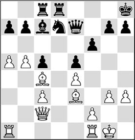
This is a suitable moment to take a closer look. White has almost everything a chess player can want, but how can he make progress? Or rather: how can he make optimum use of his supremacy on the light squares?
Here again, we must think schematically and ask ourselves which pieces we would prefer to exchange and which pieces we want to retain on the board. In order to make optimal use of the light-squared bishop, it is important to trade off all the rooks. Then White will be able to set up a battery on the a2-g8 diagonal with his queen and this bishop, creating mating patterns around the black king. This plan is carried out flawlessly by Botvinnik.
8.♖fd1 ♘f8
Black cannot prevent the exchange of all the rooks, as otherwise White would double rooks and exploit the d-file.
9.♕a2 ♖xd1+ 10.♖xd1 ♖d8 11.♖xd8 ♗xd8 12.a6
Botvinnik carries on with his light-square strategy for the time being, and with the text he rids himself of a slight weakness. Black must allow himself to be bricked in further.
12…b6
12…bxa6 hardly came into consideration, since then Black would succumb to the weaknesses of his pawns on a7 and c5.
13.♔g2
This move also fits into White’s light-square strategy. White has plenty of time and he leaves nothing to chance. The pawn on h3 is protected and a possible check on the back rank is ruled out.
13…♕d7 14.♕e2!
White now prepares to set up the battery.
14…♘g6 15.♗b3 ♘e7 16.♕c4 h6
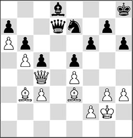
Black is totally passive.
17.♕f7!
Here it becomes clear why forcing the weakening on the 4th move was so important. The queen now invades the black camp unhindered.
17…♔h7
Obviously, 17…♕xb5 was out of the question on account of 18.♕f8+ ♔h7 19.♕xd8 ♕xb3, and now the black knight is also hanging.
18.♗c4 ♕d6
Black can do nothing now, and White can prepare the final act.
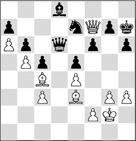
19.h4?!
Botvinnik strictly adheres to his clear-cut plan. If he had kept an open eye, he would doubtlessly have found 19.g4!. This interesting move was proposed by several pupils in my training groups. White threatens 20.♗xh6, when 20…♔xh6 fails to 21.♕h5#. Black is forced to play 19…♔h8. The win for White is now quite instructive. His pieces cooperate elegantly: 20.♕f8+ ♔h7 21.♗g8+ ♔h8 22.♗e6+ ♔h7 23.♗xh6!! (a beautiful apotheosis) 23…gxh6 (23…♕xe6 24.♕xg7#; 23…♔xh6 24.♕h8+ ♔g5 25.♕h5+ ♔f4 26.g5! ♕xe6 27.♕h4+ and mate) 24.♕f7+ ♔h8 25.♕xf6+ ♔h7 26.♗g8+, winning the queen.
After 19.g4! Black can also try 19…f5 20.exf5 ♕f6, as Hans Reusink has pointed out. Then there is another pretty win for White: 21.♕e8 ♗c7 22.g5!! (opening up the kingside) 22…hxg5 23.h4!!, simply threatening to win with 24.hxg5. Now, on 23…gxh4, 24.♕h5+ wins the queen, and 23…♘xf5 is refuted by 24.♗g8+ ♔h6 25.hxg5+.
19…♕d1
After 19…♕d7, White should continue with 20.f3, in order to make g3-g4 possible again. That would soon have broken all resistance as well.
20.♕e8
White draws the mating net tighter. There is no remedy against 21.h5, followed by 22.♗f7, 23.♗g6+ and 24.hxg6#. Black’s panic reaction also fails to solve anything.
20…f5 21.exf5 ♘xf5 22.♗g8+ ♔h8 23.♗f7+ ♔h7 24.♕g8#
1-0
We have learned here that you should not give up your bishop pair without a fight. Of course, everything depends on the specific characteristics of the position, but in the above position it soon became clear that the white bishop would become a ‘murder weapon’. That was mainly connected with the pawn structure in the centre: the fixed pawns on e4 and e5, which made the light squares in the black camp weak.
The principles we discovered in the previous fragment also apply in the following instructive game fragment.
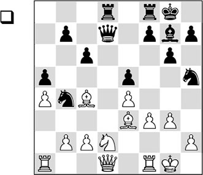
White has the bishop pair, and especially the bishop on c4 catches the eye. Just as in the previous fragment, the bishop does not have an ‘opponent’, and due to, among others, the fixed structure of the pawns on e4 and e5, the light squares in the black camp have been thoroughly weakened again. The weaknesses in Black’s pawn structure on the queenside also stand out. In particular the b6-square is a source of worry for the black player. With his next move White prepares to expose these weaknesses.
1.♗b3!
Stean vacates the c4-square for his knight and also protects the pawn on c2, enabling him to move his queen away from d1 and contest the d-file with his rooks.
1…c5
Black is weakening even more light squares, but here this is dire necessity. There is nothing sensible to think of against White’s above-mentioned plan. Planinc resigns himself to the fate of a passive defender and tries to build a solid set-up.
2.♕e2 b6 3.♖fd1 ♕c7 4.c3 ♘c6
The knight could not step inside: 4…♘d3? would lose a piece after 5.♘c4.
5.♘c4 ♘f6
White now holds all the trumps, but he must choose his plan.
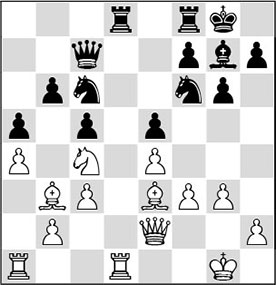
In the previous fragment we saw that exchanging off all the rooks helps White, but this can wait until later. At this moment it is more important for White to search for a target in the enemy camp. One possibility is to play for the beautiful d5-square with 6.♗g5, followed by 7.♗xf6, 8.♘e3 and 9.♘d5, but this seems out of place here, since the presence of opposite-coloured bishops may give Black drawing chances. It is better for him to direct his attention to the queenside, where the weak brother on b6 must be kept under close watch.
The squares b3, c4, b5, a6 and d5 are completely in White’s hands, and so with his queen, bishop and knight, he can perform the by now well-known ‘changing of the guard’. The first thing White strives for is to get his queen on b5 (or else on a6) and his knight on c4.
6.♘a3 ♘a7
Black immediately reacts to this plan, and so White has to think up something new.
7.♕c4!
A very deep move. White is looking for a set-up in which he can attack the pawn on b6, and he wants to do this from the b3-square.
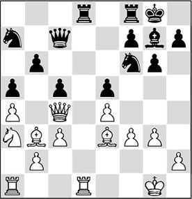
With a knight on c4 (after he has exchanged all the rooks), the pawn on b6 can only be protected by the knight on a7. The big question is what White should do with his bishop in the meantime. Stean has seen the answer to this question very sharply: the bishop is played to a6 via d1 and e2, in order to eliminate the defender on c8.
It is remarkable how a grandmaster manages to formulate such a plan. But as we have seen before, this schematic way of thinking is not only important in endgames, but also in middlegames, especially with a static pawn structure.
7…♖fe8 8.♔g2
White has plenty of time and he feels more comfortable with his king on this light square. We have also seen this principle in the previous fragment.
8…h6
Tarrasch once said that a passive position carries the seed of defeat. Here this saying appears to hold true, since now that the black player must take up a wait-and-see attitude, he can easily be led astray. With the text, he weakens his king position slightly.
9.♖xd8
Finally White commences with the plan described above. First the rooks must disappear.
9…♖xd8 10.♖d1 ♖xd1 11.♗xd1
This is a welcome bonus, since the bishop had to be played to e2 anyway.
11…♗f8 12.♗e2 ♔g7 13.♕b3 ♘e8
Now it is high time for Black to take measures, otherwise he will be counted out mercilessly.
14.♗a6 ♘d6
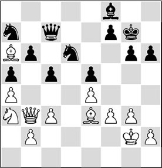
Black has just barely succeeded in keeping the white knight from c4, but his knight manoeuvre is a concession to something else: the influence on the central square d5.
15.♕d5
White doesn’t need to be told twice. Now that the d5-square has been abandoned, the queen jumps to it, creating new threats. This is another beautiful illustration of what is meant by the ‘changing of the guard’. White manoeuvres on the weak squares until the opponent is wrong-footed.
15…♘e8
The alternative is 15…f6, but that would extend the a2-g8 diagonal, and since all the rooks have been traded off, there would immediately appear mating patterns as soon as White manages to set up his battery. He would continue with 16.♘c4 ♘ac8 17.f4 exf4 18.gxf4, when Black can no longer deal with the threat of 20.e5.
16.♘c4
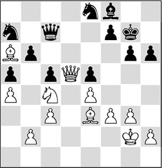
16…♘f6
Black gives up the fight. After the normal 16…f6, White would have two pretty methods to crown his strategy:
A) The petit combinaison 17.♘xb6: after 17…♕xb6 18.♗c4 the battery has been set up again, and 18…♕xb2+ 19.♔h3 is of no avail;
B) 17.♕a8! ♔f7 18.♗b7 wins a piece. The best move in these circumstances was 16…♗d6, but now again White has the subtle queen move 17.♕a8!, and the black position collapses: 17…♕b8 18.♕xb8 ♗xb8 19.♘xb6, and the loss of another pawn cannot be averted.
17.♕xe5
White accepted the gift and did not have much trouble to convert it into a win.
We conclude with a game in which White invests material in order to obtain supremacy on a certain colour. Marcel Piket, the elder brother of the well-known Dutch grandmaster Jeroen, catches his opponent unawares with several sharp sacrifices.
QP 4.6 (A46)
1.d4 ♘f6 2.♗g5 e6 3.♘f3 h6 4.♗xf6 ♕xf6 5.e4 d6 6.♘bd2 ♘d7 7.c3 e5 8.h4 c6 9.♗d3 ♗e7 10.♘c4 0-0 11.♘e3 ♖e8 12.♔f1 ♗f8 13.g3 ♕d8 14.d5
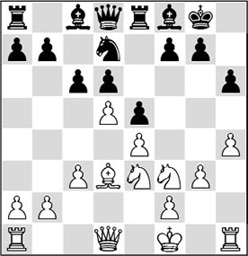
14…cxd5?
A positional mistake which will cause quite a lot of trouble for Black. He surrenders the d5-square without a fight. As we will see later, White’s attacking operations will all be directed via this square, and other weakened light squares.
15.♘xd5 ♘f6 16.♗b5!
Putting a spoke in Black’s wheel. Probably he thought that giving up the d5-square would be compensated for by active piece play after …♗e6. After the text he is obliged to make an unnatural rook move.
16…♖e6
As is easy to verify, both 16…♘d7 and 16…♗d7 meet with great obstacles. After the former White will clearly be pulling the strings with 17.a4! a6 18.♗c4, and after the latter things will be even worse: 17.♘xf6+ gxf6 18.♗xd7 ♕xd7 19.g4!, with complete domination.
After the text move, White has a nasty surprise for his opponent.
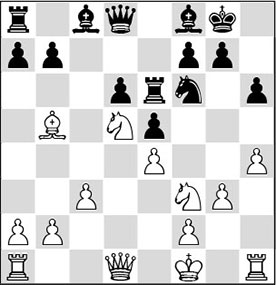
17.♘g5!
A well-timed piece sacrifice which exposes the shortcomings in Black’s position. The sacrifice must be accepted.
17…hxg5 18.hxg5 ♘g4
Black quickly returns the material, since after, for instance, 18…♘xd5 19.exd5 ♖g6 20.♕h5, he would soon be mated.
19.♕xg4 ♖h6 20.♕f3 ♗g4

The black player had pinned his last hopes on this move, but again, White has looked further than the end of his nose. Incidentally, after 20…♖xh1+ 21.♕xh1 White would only have had a small, though tangible advantage.
21.♕xg4!
A double rook sacrifice that cannot be accepted. This means that the light squares will now be permanently in White’s hands.
21…♖xh1+ 22.♔g2 ♖h7
If Black accepts the second rook with 22…♖xa1, White opens up the light-square complex with 23.g6. Now Black has only one defence: 23…♗e7 (23…♖c8? loses by force to 24.♗d7 ♖c4 25.gxf7+ ♔xf7 26.♕e6#), but then White continues his light-square strategy with 24.♗d7! ♔f8 25.gxf7 ♗f6 (on 25…♔xf7, White gives mate with 26.♗e6+ ♔f8 27.♕h5 ♕e8 28.♕h8#) 26.♗e8, and there is nothing left for Black but to enter a hopeless endgame with 26…♕xe8 27.fxe8♕+ ♖xe8 28.♕f5 ♖xa2 29.g4 ♔g8 30.g5 ♗d8 31.g6, and here also, mate is not far off.
23.♖h1!
Another very good move. The black rook is an important defender of its king and therefore has to be exchanged.
23…♖xh1 24.♔xh1 ♕c8?!
After this move the game is, in essence, decided. But 24…♗e7 would run into the same refutation as in the previous variation: 25.g6 ♗f6 26.♗d7, and the combined power of queen, bishop plus knight will soon be too much for Black.
25.♗d7 ♕c4
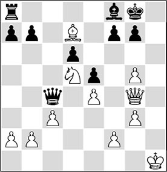
26.♘e3?!
White had to be careful, as Black had created several counterchances with 26…♕f1+. But here Piket fails to finish the job in style. With the pointed 26.♘f6+! White could have elegantly combined attack with defence: 26…gxf6 27.gxf6+ ♔h8 28.♕h3+ ♔g8 29.♗f5, and apart from the fact that he is threatening to give mate, White has prevented the most important enemy checks (…♕f1 and …♕xe4).
26…♕xa2 27.g6!
Of course, White again breaks open the light-square complex.
27…♗e7
A final attempt to activate an inactive piece.
28.♘d5
This is where the knight belongs!
28…♗f6
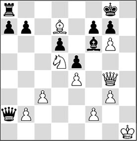
White now has several ways to conclude the game, but he chooses a stylish one:
29.♕h3 ♕b1+ 30.♔h2
And Black resigned, as after 30…fxg6 he gets knocked out with 31.♗e6+ ♔f8 32.♕h8#.
Exercises
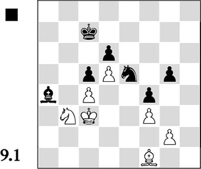
Is it good for Black to liquidate to an endgame of knight versus bishop? In other words: can he win after 46…♗xb3 47.♔xb3 ? Work out a winning plan, even if you opt for another possibility.
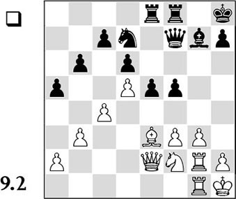
How does White create a strong square in this position? Next, indicate in words what White’s plan should be after that.
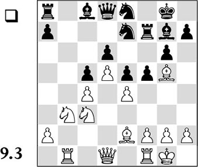
White considered the time was ripe for 15.exf5, after which Black felt compelled to play 15…♗xf5, so that White could focus on conquering the strong e4-square. How did he do this, and which pieces should he exchange to achieve the ‘ideal position’?
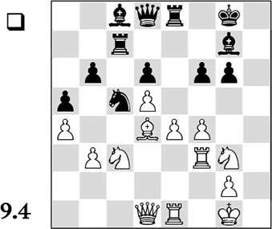
a) With which move does White create a strong square deep in the enemy ranks?
b) What is the correct plan for White after this?